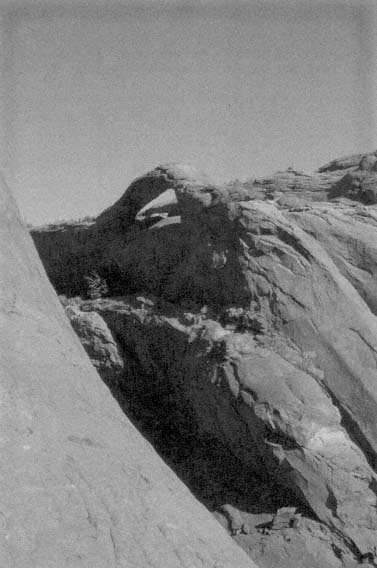
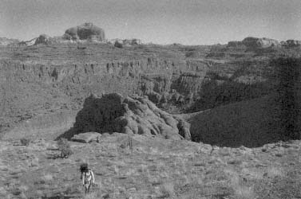
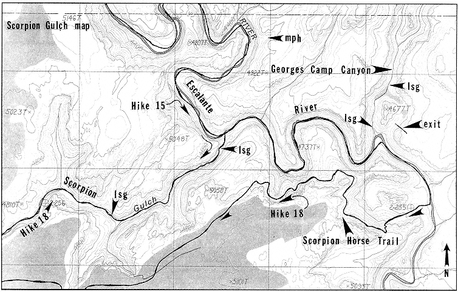
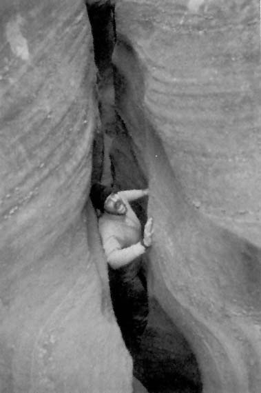

Upper Brimstone Gulch—The SlotHike #17
Upper Brimstone GulchThe SlotHike #17
Season:
Any. Recent rains will make this a tough hike.
Time:
5.0 to 7.0 hours.
Water:
There may be no water along this route. Bring your own drinking water.
Elevation range:
4800' to 5440'.
Maps:
Egypt and Big Hollow Wash.
Skill level:
Moderate route finding. Class 4 climbing. There may be some wading. This route is suitable for thin athletes only. The slot is so narrow that those of hefty build cannot make it through. This slot is not appropriate for claustrophobes, novice slot canyoneers, youngsters, or youth groups.
Special equipment:
Wading boots. Use the smallest daypack you can. A large pack will be difficult to maneuver through the narrowest sections. A forty-foot rope will prove useful.
Land status:
This hike is in Grand Staircase-Escalante National Monument.
Brimstone Gulch reminds me of one of my childhood heroes, David Innes, who, in Edgar Rice Burroughs's At the Earth's Core, made his way to Pellucidar, a land buried deep in the very bowels of the earth. Brimstone Gulch is often explored from its bottom end, but hikers there are stopped by its unrelenting narrows. Its upper section also contains long stretches of tight, sinuous narrows.
The route starts on top of Early Weed Bench and descends most of Brimstone Gulch. It returns to the trailhead along the rim of the canyon, providing an opportunity to view an exquisite and seldom seen arch.
Down Brimstone Gulch
(Egypt map, Map Twenty and Map Twenty-one.) From the parking area at the end of the road locate a Wilderness Study Area sign on a flexible post at the start of a no longer used track that goes downhill to the southeast. Follow the sandy track for five minutes until it crosses a short stretch of Navajo slickrock, dips into a shallow wash, then goes up a gentle risethe first uphill section of the track. Do not go up the hill. Leave the track and hike southeast down the wash.
Easily skirt two small drops. Pass the third dropa steep slot lined with large potholeson the left by descending a broken wall

to a bench that is above another slot. Follow the bench downcanyon until it intersects yet another slot. Find what seems to be an unlikely route south-southwest down a steep prow formed by the junction of the two slots into the main canyon. Ball-bearing rock covers the prow. Be careful!
The first narrows start shortly below the slab. If you cannot make it through them, it is time to call it a day. The slot only gets
tighter and more difficult below. Now the canyon alternates between slots and sandy sections. Escapes from the canyon are manifold.
The ultra narrows are very long and incredibly tight. At the end of this section a small gully on the right provides egress from the canyon, if needed. Below, negotiate several large pools directly or, in every case, pass them on the right. The route ends at a high drop in the slot. You cannot continue past this point. (You are at about the "e" in Brimstone on the Big Hollow Wash map.) (3.0-4.0 hours.)
To the trailhead
Backtrack for several minutes to the first possible exit on the right (LUC)(E). Hike generally north through mesmerizing slickrock domes, heading or crossing small canyons as needed. Eventually you will be forced to the rim of the canyon. Keep a sharp eye out for an arch near the rim. (It is located one-quarter mile west-northwest of elevation 5283T on the Egypt map.) Near the head of the canyon you will intersect the track you started on. Follow it back over the head of Brimstone Gulch to the trailhead. (2.0-3.0 hours.)
Digression: The enthusiastic explorer can combine Brimstone, Spooky, and Peek-a-boo gulches into a slot canyon tour de force. Instead of exiting Brimstone Gulch on the left (LDC)(E), find a route out on the right (LDC)(W). Hike west over a rise into Spooky Gulch, the first canyon you encounter. It is a wide wash at this point. Now follow the directions in Hike #16. Peek-a-boo Gulch takes you back to the top of Early Weed Bench.
*Scorpion Gulch and the Scorpion Horse TrailHike #18 *
Season:
Spring or fall. Due to a long, dry cross-country stretch, do not attempt this route in the summer or during periods of hot weather.
Time:
15.0 to 20.0 hours. This is a very long two-day hike. Three or four days are recommended.
Water:
Water availability is a problem on this route. The Escalante River has a perennial flow of water. Scorpion Gulch has large springs. The cross-country route back to the trailhead is dry. One dry camp is recommended.
Elevation range:
4200' to 5400'.
Maps:
Egypt and Scorpion Gulch. If you plan to do the rock climber's route, add the Stevens Canyon North map.

Skill level:
Moderately difficult route finding. There is one long cross-country stretch. Class 4-climbing without exposure. Some wading. This is a strenuous hike suitable for the experienced and fit backpacker. Low impact camping skills are essential.
Special equipment:
Wading shoes or boots. Have enough water capacity to deal with a dry camp. Two gallons for each person are recommended.
Note:
Lower Scorpion Gulch contains thick stands of poison ivy that are not avoidable.
Land status:
This hike is in Grand Staircase-Escalante National Monument and Glen Canyon National Recreation Area.
Sometimes redundancy is the better part of practicality. Although a route up Scorpion Gulch was described in Hike #15, Scorpion Gulch is such a popular hike that it only makes sense to describe the route going the other waydowncanyon. To add zest and to make the hike into a loop, the Scorpion Horse Trail, the finest ledge walk in the Escalante, is traversed on the return trip.
The route starts at the Early Weed Bench trailhead, crosses Scorpion, and goes down Scorpion Gulch. After a short trek down the Escalante River, the Scorpion Horse Trail is followed out of the canyon. A cross-country jaunt that heads Scorpion Gulch and crosses Scorpion leads back to the trailhead.
To Scorpion Gulch
(Egypt map and Map Nineteen.) From the end of the road,

look east. Below you is the gorge of Brimstone Gulch. Farther to the east is a long, low ridge (elevations 5492T and 5387T). In the background, with only its upper half visible, is Scorpion Point, a flat-topped slickrock mesa (elevation 5460 on the Scorpion Gulch map). On its right side is a small pointed dome; to its right is a small dark pinnacle (the tail of the scorpion).
From the parking area at the end of the road locate a Wilderness Study Area sign on a flexible post at the start of a no longer used track that goes downhill to the southeast. Follow the track as it turns northeast and goes over the head of Brimstone Gulch and past elevation 5378T before turning south for a short distance. When the track turns northeast again, watch for a small arch in the middle of the long, low ridge to the right (E). (The arch is one-quarter mile east of elevation 5283T.) Leave the track and hike to the arch. It is formed from a thin layer of limestone that composes the lowest member of the Carmel Formation.
Hike east to the top of the ridge. Scorpion Point will be visible to the east. (Scorpion Gulch map.) Note that a descending ridge (containing elevation 5253T) drops northeast from the highest point. Scorpion Gulch starts at the end of this ridge, which should be used as a landmark. A sand dune on the west side of Scorpion Gulch near its head leads into the canyon. (3.5-4.5 hours.)
Down Scorpion Gulch
An established trail leads down Scorpion Gulch. Water starts flowing just past a large sand dune, though it disappears underground from time to time. An area of large spring-fed pools at a sharp left bend in the canyon is a delight. These springs are dry in the summer. (Map Twenty-two.) If you camp in the area, please stay in the sandy wash below the pools. Do not camp next to the pools.
The canyon enters the Wingate and becomes more narrow. A large chockstone is passed on the right (Class 4-). Below the chockstone a riparian habitat develops and large springs are found. Poison ivy becomes a problem. There are a few small campsites near the Escalante River. (2.5-3.5 hours.)
Rock climber's note: There are two difficult routes to the top of the Escalante escarpment on the opposite side of the river to the north. One consists of climbing a steep wall (Class 5.4, 25'); the other ascends a narrow rib dotted with Moqui steps that is a couple of hundred yards downcanyon from the mouth of Scorpion Gulch (Class 5.0, 60'). The route through the initial cliff band for both climbs starts 100 yards up the river.
To Georges Camp Canyon
Walk and wade down the Escalante River. Georges Camp Canyon is the first canyon on the left (N). Its mouth is marked by a large abandoned meander (elevation 4677T). The canyon to the left (W) of the abandoned meander contains a large freshwater spring and good campsites are nearby. (1.0-1.5 hours.)
Rock climber's note: A fine route suitable for rock climbers starts here. The hike takes 9.0-12.0 hours, requires several short climbing pitches, some wading, and perhaps a short swim or two.
Follow a rarely used horse trail up a steep hill to the right (E) side of the abandoned meander. The Wingate wall to the right (E), though it looks sheer from the ground, is broken in one place. (Map Twenty-two.) Find a route through a hole and up a chimney (Class 5.4, 60') to the top of the wall. You may see a worn row of Moqui steps on your way up. This route may take some scouting to find.
Follow the right (E) rim of the east fork of Georges Camp Canyon, staying on top of the Wingate or running along Kayenta benches for about three hours until it is possible to drop into the canyon. (There are many entrances once you are even with elevation 6318T on the Stevens Canyon North map).
Proceed downcanyon. The canyon narrows and short pouroffs into pools prove challenging (Class 5.5, 20'). You must deal with some directly; others you can find routes around. A wall on the left (LDC) in the middle of the narrows contains an amazing row of Moqui steps that go up an overhang. Pass a large fall on a thin ledge to the right (LDC); then climb down a short crack. The climbing difficulties are over, but there are still a couple of hours of boulder hopping and rough going ahead before you reach the Escalante River.
To the Scorpion Horse Trail
From Georges Camp Canyon continue down the Escalante River for twenty minutes to a large cliff dune on the right (W) (located at 2-255, an abandoned meander shown on the map). Before you leave the river, calculate your water needs. You will not find water along the route until back at the trailhead, 8.0 to 10.5 hours away. Ajump start is advised. Hike up the dune. The Scorpion Horse Trail becomes apparent as you enter the Kayenta. A wide terrace on top of the Kayenta provides an excellent place to camp for the night. (1.0 hour.)
From the top of the Kayenta follow the horse trail upcanyon (NW) below towering Navajo walls. The trail heads several short canyons and in an hour it turns abruptly left (S) (one-quarter mile east of elevation 5058T), goes up a steep broken hill, through a brush fence, and disappears in the sand at the top of the escarpment. (1.5-2.5 hours.)
Alternate route: If water is a problem, you can enter Scorpion Gulch. Instead of following the Scorpion Horse Trail up the hill to the top of the escarpment, continue north on the Kayenta until you are above Scorpion Gulch. Now follow tiring Kayenta ledges up Scorpion Gulch until it is possible to descend to the canyon floor near the spring-fed pools.
To the trailhead
From the top of the escarpment, Scorpion Point is visible to the west-southwest. Using the point as a landmark, make your way along the rim of Scorpion Gulch to its head (2.0-2.5 hours.)
The sand dune you used initially to get into Scorpion Gulch will be visible a short distance downcanyon. Use directions from Hike #15 to get back to the trailhead. (3.5-4.5 hours.)
Dry Fork Coyote Road Section
Access to Hike #19.
Access is from the Hole-in-the-Rock road.
MapBig Hollow Wash.
The Dry Fork Coyote road starts 25.9 miles down the Hole-in-the-Rock road at the ''Dry Fork Trailhead 1.7 mi." sign (shown as a Jeep Trail at elevation 4884 on the Big Hollow Wash map) The track is suitable for high-clearance vehicles. There are several campsites along the track. (See Map Fifteen.)
0.0
At the Hole-in-the-Rock road. Go east.
0.6
"Y." Go left (W). The track you are now on is not shown on the USGS map.
1.6
Start of Peek-a-boo and Spooky GulchesThe Standard Loop Hike #19. At a parking circle on the edge of a cliff. Limited camping. The trailhead is not shown on the USGS map. It is located one-quarter mile north of elevation 4932. You are in Navajo Sandstone.
Digression: Dry Fork Coyote provides alternative access to Hurricane Wash and Coyote Gulch. Although the wash in its upper reaches is sandy and tiring to hike, several short side canyons make it worthwhile. The text that follows notes water sources.
See Hike #19 for directions on entering Dry Fork Coyote. Once in the canyon, hike down it, passing the mouths of Peek-a-boo, Spooky, and Brimstone gulches. A short side canyon to the left (shown to the east of elevation 4803) contains a long string of medium potholes and a small natural bridge.
Boxelder Canyon (LKA), named for a small stand of those trees near its mouth, comes in on the left (N) (located to the east of
elevation 4744). The canyon is sand-floored, pristine, and pretty. A medium pothole can be found near the end of the canyon on a bench below a hanging garden.
Grove Canyon (AN), twenty-five minutes down from Boxelder Canyon, and also on the left (N) (located to the east of elevation 4587), is difficult to locate because its mouth is obscured by a handsome grove of cottonwoods. A short distance up this side canyon, a slab on the right leads out of the canyon. Follow the rim upcanyon to a small drainage and a large pothole. At the end of the canyon, below a pour-off, is a medium pothole.
The hike down Dry Fork Coyote from Grove Canyon to Coyote Gulch is best described as a pretty chore. The vegetation which chokes the canyon and the seasonal ponds that form along its course can make for frustrating walking. See Hike #20 for details on continuing down Coyote Gulch. (King Mesa map.) (5.5 to 7.5 hours from the Dry Fork Coyote trailhead to Coyote Gulch.)
Peek-A-Boo and Spooky GulchesThe Standard LoopHike #19
Season:
Any. Recent rains can make this a tough hike.
Time:
2.5 to 4.5 hours.
Water:
There is no water along this route. Bring your own drinking water.
Elevation range:
4640' to 4960'.
Map:
Big Hollow Wash.
Skill level:
Easy route finding. Class 4 + climbing. The leader must be experienced with belay techniques and be capable of leading the climbing sections without protection. Exceptionally rotund hikers cannot squeeze through Spooky Gulch.
Special equipment:
A forty-foot rope will reassure beginners and youngsters. Large day packs will not fit through the slots.
Note:
On busy weekends these slots are packed with people. Try to do them during the week or in the off-season.
Land status:
This hike is in Grand Staircase-Escalante National Monument.
This is the premier and most popular short slot loop on the Colorado Plateau. Claustrophobically tight narrows, a host of natural bridges, and sensuous curves of cross-stratified sandstone combine to provide a magnificent experience.
The route starts by entering Dry Fork Coyote. It then goes up
Peek-a-boo Gulch, crosses a small ridge, and descends Spooky Gulch.
To Peek-a-boo Gulch
(Big Hollow Wash map and Map Twenty-one.) From the trailhead look north-northeast. Dry Fork Coyote is below you. On the far side of the canyon you will see one large vertical wall. To its right is a short narrow gap. This is Peek-a-boo Gulch. (Peek-a-boo Gulch is not labeled on the map. It is located to the east of elevation 4988.) A cairned trail takes you north down the initial cliff band and a small drainage that ends on the right side of a sand dune. Do not skirt along the top of the dune. Instead, descend straight down into a small canyon that leads to Dry Fork Coyote. Multiple trails are a problem in this area. Keep on the trail and off the sand dune.
The slots
Ascend a row of recently and needlessly carved steps into Peeka-boo Gulch. Two sets of natural bridges, one large, the other small, are a major attraction for photographers. Small challenges lie ahead. One short section of slot is too tight to squeeze through. Exit the slot, walk the rim for a short distance, then drop back into the slot. It ends in a wash just about the time you are getting warmed up.
Cut due east across a low ridge for ten minutes (many options) to Spooky Gulch, which starts as the first wide sandy wash you intersect. (Spooky Gulch is not labeled on the map. It is located to the west of elevation 4970.) Proceed downcanyon. The wide wash quickly narrows and the fun begins. Tight slots, short drops, and a route through a chockstone jungle are a delight. The slot ends and a short walk down the wash leads back to Dry Fork Coyote.
Digression: Brimstone Gulch is a short distance down Dry Fork Coyote and is worth exploring. Hike downcanyon along the wide, sandy wash. The canyon narrows and a large chockstone blocks the way. Pass it on the right (Class 5.0, 10'). The canyon again opens. A curtain of white guano marks a large bird nest on the right-hand wall. Brimstone Gulch enters from the left (N) shortly past the bird nest.
Though wide and sandy at its mouth, Brimstone Gulch narrows into a spectacular slot. Squeeze your way up as far as you are comfortable. You cannot make it all the way through. When you return to Dry Fork Coyote, you can walk downcanyon for a couple of minutes to a slickrock slab on the right (SW). It leads to the rim of the canyon, which you can follow back to the trailhead.
To the trailhead
Hike up Dry Fork Coyote to the mouth of Peek-a-boo Gulch. You are in a broad sandy area. Look west. A narrow opening marks

the mouth of upper Dry Fork Coyote. Ramble through its never-ending narrows. As the narrows die, pick one of many exits to the left (LUC) and follow a southeasterly course over low hills back to the trailhead.
Red Well Trailhead Road Section
Access to Coyote Gulch.
Access is from the Hole-in-the-Rock road.
MapBig Hollow Wash.
The Red Well road starts 30.7 miles down the Hole-in-the-Rock road at the "Red Well 1.5 mi." sign (located one-quarter mile south of Liston Seep on the Big Hollow Wash map) . The track is suitable for high-clearance vehicles. There are several campsites along the track. Do note that the Red Well trailhead is not located at Red Well, which is a mile to the southwest. (See Map Fifteen.)
0.0
At the Hole-in-the-Rock road. Go northeast.
1.0
Good camping in this area. The track becomes much rougher ahead.
1.3
End of the track. Trailhead and trail register. Limited camping. The trailhead is located at the end of the track near elevation 4530. You are in Navajo Sandstone.
Digression: The Red Well trailhead is located near the confluence of Big Hollow Wash and upper Coyote Gulch. It provides alternate access to Hurricane Wash and Coyote Gulch. Hike east down a track into Coyote Gulch. In thirty-five minutes Dry Fork Coyote comes in on the left (N). (King Mesa map.) Water may start to flow here. Pass a waterfall in a gorge on either side. The first side canyon below a hiker's maze, on the left (N), is Sleepy Hollow (LKA). (It is shown to the east of elevation 4500.)
The canyon slowly deepens and narrows. Hurricane Wash comes in as a narrow defile on the right (W). (3.5-4.5 hours.) See Hike #20 for details on exploring Coyote Gulch from Hurricane Wash to the Escalante River.
A popular continuation of this hike goes up the Escalante River from its confluence with Coyote Gulch to Fools Canyon. Make your way up Fools Canyon through a thick tangle of brush (some poison ivy), over and around beaver dams and ponds, down a cliff (Class 5.1, 30', belay and lower packs), until you are above a huge pool. (Immediately above the pool the thrashing ends and the canyon floor is slickrock.) Exit the canyon on the left (LUC)(SW) by way of a constructed cattle trail (described in Hike #21). Cross broken terrain to the west end of King Mesa (near elevation 5294). From there the Red Well trailhead may be visible. Descend into Coyote Gulch (many options) and return to the trailhead. (Four to five days for the complete loop.)
Historical note: Red Well was developed by rancher Ursel "Red" Shirts. The Shirts family, consisting of Carl Shirts, his wife, and
nine children, was part of the first contingent of settlers to the Escalante area in 1875.
Hurricane Wash Trailhead Road Section
Access to Coyote Gulch.
Access is from the Hole-in-the-Rock road.
MapBig Hollow Wash.
The signed Hurricane Wash trailhead is 33.8 miles down the Hole-in-the-Rock road and is located in a large pull-off on the right near several large tamarisk trees. (The trailhead is located one-eighth mile southeast of Willow Tank at a Jeep Trail on the Big Hollow Wash map.) There is camping at the trailhead. You are in the Carmel Formation. (See Map Fifteen.)
Digression: Hurricane Wash provides easy and popular access to lower Coyote Gulch. From the parking area, cross the road and walk east on a track along the left side of Hurricane Wash to a trail register. Now either follow the track or the wash. The domes and goblins on the left are in Entrada Sandstone. The canyon walls build slowly and it is not until you reach a Glen Canyon National Recreation Area boundary sign that the wash changes to a canyon. (King Mesa map.) Water starts flowing a short distance above the confluence with Coyote Gulch. See Hike #20 for details on exploring the rest of Coyote Gulch. (2.5-3.5 hours from the trailhead to Coyote Gulch.)
Fortymile Ridge Road Section
Access to Hikes #20 through 23.
Access is from the Hole-in-the-Rock road.
MapsSooner Bench and King Mesa.
The Fortymile Ridge road starts 36.1 miles down the Hole-in-the-Rock road at the "40 Mile Bench" sign (located halfway between elevations 4766 and 4727 on the Sooner Bench map) . The track is suitable for high-clearance vehicles for the first 4.0 miles. It is suitable for 4WD vehicles after that. There is limited camping along the track. (See Map Fifteen.)
0.0
At the Hole-in-the-Rock road. Go northeast.
0.6
Cattle guard.
4.0
(King Mesa map.) Start of Coyote Gulch Hike #20. "Y." The track to the left (N) goes up a short steep hill to a large stock tank and the Coyote Gulch trailhead and trail register. There is good
camping here. The trailhead is located at a bend in the track shown near elevation 4805. You are in the Carmel Formation.
The track ahead now gets rougher and is full of long sand traps. Only 4WD vehicle may be able to make it through them. Be careful.
5.3
Cattle guard.
6.1
Glen Canyon National Recreation Area boundary.
6.6
Start of Stevens Canyon and the Waterpocket Fold Hike #21, Stevens and Fold Canyons Hike #22, and the Pollywog Bench Area Hike #23. At the Fortymile Ridge trailhead and trail register. There is good camping here. The trailhead is located just south of elevation 4678. You are in the Carmel Formation.